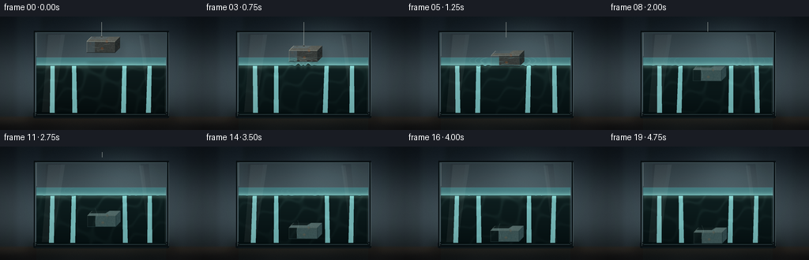
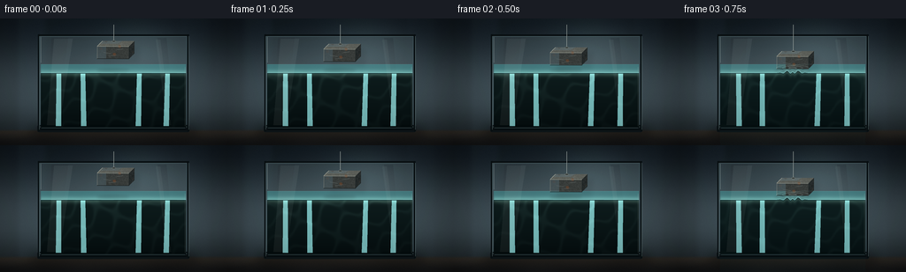
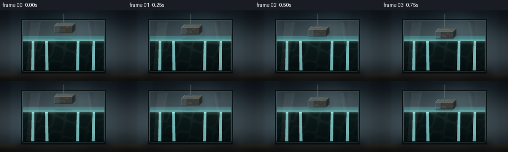
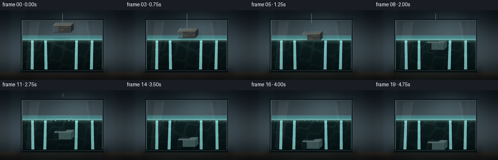
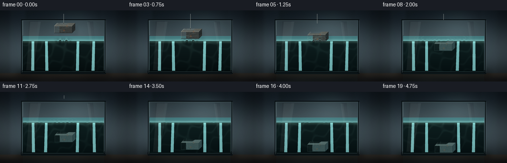
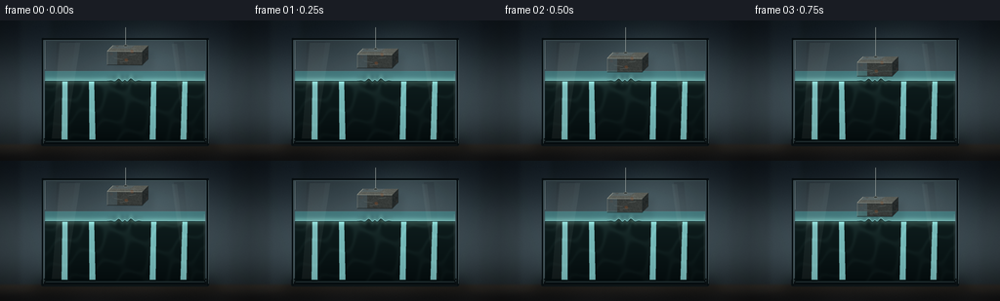

CODING AGENTS AS PIXEL WORLD MODELS
traex/DeepSeek-V4.1-Flash · phygen_006
点击播放 · 原生 RGB 像素
逐轮保存的候选
回放视频、检查图与代码变化。
每份候选均可单独播放。实际图片检查记录在下方工具轨迹中。
候选 01播放与检查图
点击播放 · 原生 RGB 像素


展开代码变化
--- 上一保存版本
+++ 本次保存版本
@@ -0,0 +1,651 @@
+"""Procedural RGB rendering for the iron-on-water tank shot.
+
+The scene is composed at 4x resolution and downsampled at the end. All
+materials, water motion, lighting, and the iron slab are generated locally
+with NumPy and Pillow.
+"""
+
+from __future__ import annotations
+
+import math
+from pathlib import Path
+
+import numpy as np
+from PIL import Image, ImageDraw, ImageFilter
+from scipy.ndimage import gaussian_filter
+
+import artifact_io
+
+
+CASE_DIR = Path(__file__).resolve().parent
+OUT_W, OUT_H = 256, 144
+SS = 4
+W, H = OUT_W * SS, OUT_H * SS
+
+
+def sc(value: float) -> int:
+ return int(round(value * SS))
+
+
+def pil_color(rgb: tuple[int, int, int], alpha: int = 255) -> tuple[int, int, int, int]:
+ return rgb[0], rgb[1], rgb[2], alpha
+
+
+def smoothstep(edge0: float, edge1: float, value: np.ndarray | float):
+ x = np.clip((value - edge0) / (edge1 - edge0), 0.0, 1.0)
+ return x * x * (3.0 - 2.0 * x)
+
+
+def composite_alpha(base: np.ndarray, layer: np.ndarray, mask: np.ndarray) -> np.ndarray:
+ alpha = np.clip(mask[..., None], 0.0, 1.0)
+ return base * (1.0 - alpha) + layer * alpha
+
+
+def overlay_rgba(base: np.ndarray, rgba: Image.Image) -> np.ndarray:
+ layer = np.asarray(rgba, dtype=np.float32)
+ alpha = layer[..., 3:4] / 255.0
+ return base * (1.0 - alpha) + layer[..., :3] * alpha
+
+
+def make_background() -> tuple[np.ndarray, np.ndarray]:
+ yy, xx = np.mgrid[0:H, 0:W].astype(np.float32)
+ nx, ny = xx / W, yy / H
+
+ top = np.array([20, 29, 36], dtype=np.float32)
+ middle = np.array([63, 77, 84], dtype=np.float32)
+ lower = np.array([32, 41, 45], dtype=np.float32)
+ v = smoothstep(0.0, 0.58, ny)
+ bg = top[None, None, :] * (1.0 - v[..., None]) + middle[None, None, :] * v[..., None]
+ v2 = smoothstep(0.62, 1.0, ny)
+ bg = bg * (1.0 - v2[..., None]) + lower[None, None, :] * v2[..., None]
+
+ # A soft studio light behind the tank gives the glass a readable silhouette.
+ glow = np.exp(-(((nx - 0.62) / 0.27) ** 2 + ((ny - 0.25) / 0.31) ** 2) * 2.0)
+ bg += glow[..., None] * np.array([24, 30, 31], dtype=np.float32)
+
+ # Muted, slightly out-of-focus vertical panels in the studio wall.
+ panel = smoothstep(0.06, 0.10, nx) * (1.0 - smoothstep(0.18, 0.22, nx))
+ panel += 0.45 * smoothstep(0.78, 0.82, nx) * (1.0 - smoothstep(0.90, 0.94, nx))
+ bg += panel[..., None] * np.array([4, 6, 7], dtype=np.float32)
+
+ # Countertop and its front edge.
+ table_mask = smoothstep(sc(125), sc(129), yy)
+ table_top = np.array([53, 49, 43], dtype=np.float32)
+ table_bottom = np.array([24, 25, 26], dtype=np.float32)
+ tv = smoothstep(sc(126), sc(143), yy)
+ table = table_top[None, None, :] * (1.0 - tv[..., None]) + table_bottom[None, None, :] * tv[..., None]
+ grain = (
+ np.sin(xx * 0.011 + yy * 0.028)
+ + 0.55 * np.sin(xx * 0.024 - yy * 0.016 + 1.7)
+ ) * 1.4
+ table += grain[..., None]
+ bg = bg * (1.0 - table_mask[..., None]) + table * table_mask[..., None]
+
+ # Fine photographic grain.
+ rng = np.random.default_rng(601)
+ grain = rng.normal(0.0, 1.8, (H, W, 1)).astype(np.float32)
+ bg += grain
+
+ vignette = 1.0 - 0.32 * (
+ ((nx - 0.5) / 0.68) ** 2 + ((ny - 0.48) / 0.77) ** 2
+ )
+ bg *= np.clip(vignette, 0.62, 1.0)[..., None]
+ return np.clip(bg, 0, 255), (xx, yy)
+
+
+def draw_static_tank(base: np.ndarray) -> np.ndarray:
+ """Draw the rear glass, counter shadow, and tank hardware."""
+ # Soft grounded shadow beneath the tank.
+ shadow = Image.new("L", (W, H), 0)
+ ds = ImageDraw.Draw(shadow)
+ ds.rounded_rectangle(
+ (sc(34), sc(121), sc(224), sc(137)),
+ radius=sc(8),
+ fill=175,
+ )
+ shadow = shadow.filter(ImageFilter.GaussianBlur(sc(5.2)))
+ base *= 1.0 - 0.42 * (np.asarray(shadow, dtype=np.float32)[..., None] / 255.0)
+
+ # Back sheet of glass: a cool, smoky blue-gray.
+ rear = Image.new("RGBA", (W, H), (0, 0, 0, 0))
+ dr = ImageDraw.Draw(rear)
+ dr.rounded_rectangle(
+ (sc(43), sc(18), sc(213), sc(128)),
+ radius=sc(2.5),
+ fill=pil_color((77, 101, 108), 128),
+ outline=pil_color((18, 27, 31), 255),
+ width=sc(1.7),
+ )
+ dr.rectangle(
+ (sc(46), sc(21), sc(210), sc(124)),
+ fill=pil_color((109, 132, 136), 62),
+ )
+
+ # Diffuse reflection strips on the rear glass.
+ dr.polygon(
+ [(sc(58), sc(22)), (sc(77), sc(22)), (sc(63), sc(124)), (sc(53), sc(124))],
+ fill=pil_color((184, 211, 211), 28),
+ )
+ dr.polygon(
+ [(sc(178), sc(22)), (sc(188), sc(22)), (sc(198), sc(124)), (sc(192), sc(124))],
+ fill=pil_color((208, 224, 220), 18),
+ )
+
+ # Tank base, slightly visible through the front glass.
+ dr.rounded_rectangle(
+ (sc(42), sc(121), sc(214), sc(129)),
+ radius=sc(2),
+ fill=pil_color((13, 21, 24), 232),
+ )
+ dr.line((sc(45), sc(123), sc(211), sc(123)), fill=pil_color((112, 142, 142), 120), width=sc(0.7))
+
+ # Top rim is open; the side rails remain visible around the lowering cable.
+ dr.line((sc(43), sc(19), sc(213), sc(19)), fill=pil_color((8, 14, 17), 255), width=sc(2.1))
+ dr.line((sc(45), sc(20), sc(211), sc(20)), fill=pil_color((116, 144, 145), 145), width=sc(0.55))
+ base = overlay_rgba(base, rear)
+ return base
+
+
+def block_pose(frame: int) -> tuple[float, float, float, float]:
+ """Return x, y, rotation, and cable-end height for one frame."""
+ approach_y = [37.5, 40.8, 44.7, 49.0]
+ sink_y = [51.2, 55.2, 60.3, 66.3, 73.4, 80.2, 86.8, 93.4, 99.7, 105.0, 108.7, 111.0, 112.6, 113.7, 114.4, 114.8]
+ if frame < 4:
+ y = approach_y[frame]
+ else:
+ y = sink_y[frame - 4]
+
+ x = 127.7 + 0.9 * math.sin(frame * 0.68) * max(0.0, min(1.0, (frame - 3) / 5.0))
+ if frame <= 3:
+ angle = -0.35 + 0.08 * frame
+ elif frame <= 9:
+ angle = 0.05 + 0.85 * math.sin((frame - 3) * 0.82) * math.exp(-(frame - 3) * 0.12)
+ else:
+ angle = 0.35 * math.exp(-(frame - 9) * 0.24) * math.cos((frame - 9) * 0.7)
+
+ if frame <= 3:
+ cable_end = y - 12.0
+ else:
+ cable_end = max(3.0, y - 12.0 - (frame - 3) * 8.5)
+ return x, y, angle, cable_end
+
+
+def make_block_sprite() -> Image.Image:
+ """Build a small beveled cast-iron slab with rust and edge wear."""
+ sw, sh = sc(84), sc(66)
+ cx, cy = sw // 2, sh // 2
+ sprite = Image.new("RGBA", (sw, sh), (0, 0, 0, 0))
+ draw = ImageDraw.Draw(sprite)
+
+ front = [
+ (cx - sc(18), cy - sc(6)),
+ (cx + sc(18), cy - sc(6)),
+ (cx + sc(18), cy + sc(8)),
+ (cx - sc(18), cy + sc(8)),
+ ]
+ top = [
+ (cx - sc(18), cy - sc(6)),
+ (cx + sc(18), cy - sc(6)),
+ (cx + sc(24), cy - sc(12)),
+ (cx - sc(12), cy - sc(12)),
+ ]
+ right = [
+ (cx + sc(18), cy - sc(6)),
+ (cx + sc(24), cy - sc(12)),
+ (cx + sc(24), cy + sc(2)),
+ (cx + sc(18), cy + sc(8)),
+ ]
+
+ draw.polygon(front, fill=pil_color((57, 61, 59), 255))
+ draw.polygon(top, fill=pil_color((94, 97, 91), 255))
+ draw.polygon(right, fill=pil_color((38, 43, 43), 255))
+
+ # Subtle face shading: the left side catches the studio key light.
+ draw.polygon(
+ [
+ (cx - sc(18), cy - sc(6)),
+ (cx - sc(8), cy - sc(6)),
+ (cx - sc(8), cy + sc(8)),
+ (cx - sc(18), cy + sc(8)),
+ ],
+ fill=pil_color((78, 80, 74), 65),
+ )
+ draw.polygon(
+ [
+ (cx - sc(12), cy - sc(12)),
+ (cx + sc(10), cy - sc(12)),
+ (cx + sc(5), cy - sc(9)),
+ (cx - sc(16), cy - sc(9)),
+ ],
+ fill=pil_color((166, 165, 151), 72),
+ )
+
+ # Rust, pitting, and worn edges are clipped to the three faces.
+ mask = Image.new("L", (sw, sh), 0)
+ md = ImageDraw.Draw(mask)
+ md.polygon(front, fill=255)
+ md.polygon(top, fill=255)
+ md.polygon(right, fill=255)
+ mask_arr = np.asarray(mask, dtype=np.float32) / 255.0
+
+ rng = np.random.default_rng(19)
+ small_noise = rng.normal(0.0, 1.0, (sh // 4, sw // 4)).astype(np.float32)
+ small_noise = np.asarray(
+ Image.fromarray(np.uint8(np.clip(small_noise * 22 + 128, 0, 255))).resize(
+ (sw, sh), Image.Resampling.BILINEAR
+ ),
+ dtype=np.float32,
+ )
+ fine = rng.normal(0.0, 5.0, (sh, sw)).astype(np.float32)
+ arr = np.asarray(sprite, dtype=np.float32)
+ texture = (small_noise - 128.0) * 0.18 + fine
+ arr[..., :3] += texture[..., None] * mask_arr[..., None]
+
+ yy, xx = np.mgrid[0:sh, 0:sw].astype(np.float32)
+ rust_field = (
+ np.sin(xx * 0.074 + yy * 0.051)
+ + 0.7 * np.sin(xx * 0.143 - yy * 0.087 + 1.9)
+ + 0.45 * np.sin(xx * 0.031 + yy * 0.19 + 0.4)
+ )
+ rust = (rust_field > 1.62) & (mask_arr > 0.5)
+ rust &= (yy > cy - sc(12)) & (yy < cy + sc(8))
+ rust_rgb = np.array([118, 70, 42], dtype=np.float32)
+ arr[..., :3] = np.where(rust[..., None], arr[..., :3] * 0.48 + rust_rgb * 0.52, arr[..., :3])
+
+ # Tiny pits add material scale without becoming visual noise.
+ pits = (rng.random((sh, sw)) > 0.992) & (mask_arr > 0.5)
+ arr[..., :3] = np.where(pits[..., None], arr[..., :3] * 0.56, arr[..., :3])
+ sprite = Image.fromarray(np.uint8(np.clip(arr, 0, 255)))
+ draw = ImageDraw.Draw(sprite)
+
+ # Bevels and worn metal edges.
+ draw.line(
+ [(cx - sc(18), cy - sc(6)), (cx + sc(18), cy - sc(6))],
+ fill=pil_color((174, 174, 159), 190),
+ width=max(1, sc(0.55)),
+ )
+ draw.line(
+ [(cx - sc(18), cy - sc(6)), (cx - sc(12), cy - sc(12))],
+ fill=pil_color((201, 198, 178), 180),
+ width=max(1, sc(0.5)),
+ )
+ draw.line(
+ [(cx - sc(18), cy - sc(6)), (cx - sc(18), cy + sc(8))],
+ fill=pil_color((151, 151, 139), 145),
+ width=max(1, sc(0.45)),
+ )
+ draw.line(
+ [(cx + sc(18), cy - sc(6)), (cx + sc(18), cy + sc(8))],
+ fill=pil_color((20, 25, 26), 210),
+ width=max(1, sc(0.5)),
+ )
+ draw.line(
+ [(cx - sc(18), cy + sc(8)), (cx + sc(18), cy + sc(8))],
+ fill=pil_color((24, 29, 29), 220),
+ width=max(1, sc(0.55)),
+ )
+
+ # A few hairline scratches.
+ for p0, p1 in [
+ ((-11, 1), (-2, 2.5)),
+ ((4, -2), (11, -3)),
+ ((-5, 5), (4, 4)),
+ ]:
+ draw.line(
+ [
+ (cx + sc(p0[0]), cy + sc(p0[1])),
+ (cx + sc(p1[0]), cy + sc(p1[1])),
+ ],
+ fill=pil_color((183, 180, 160), 95),
+ width=1,
+ )
+ return sprite
+
+
+def add_underwater_tint(sprite: Image.Image, tint: float) -> Image.Image:
+ if tint <= 0.01:
+ return sprite
+ arr = np.asarray(sprite, dtype=np.float32)
+ alpha = arr[..., 3:4] / 255.0
+ water_rgb = np.array([24, 103, 111], dtype=np.float32)
+ arr[..., :3] = arr[..., :3] * (1.0 - tint * 0.28) + water_rgb * (tint * 0.28)
+ # Lower contrast is a compact approximation of submerged illumination.
+ arr[..., :3] = 128.0 + (arr[..., :3] - 128.0) * (1.0 - 0.16 * tint)
+ arr[..., :3] *= 1.0 + 0.03 * tint
+ arr[..., :3] = np.clip(arr[..., :3], 0, 255)
+ arr[..., 3:4] *= alpha
+ return Image.fromarray(np.uint8(arr), "RGBA")
+
+
+def paste_sprite(base: np.ndarray, sprite: Image.Image, cx: float, cy: float, angle: float) -> np.ndarray:
+ rotated = sprite.rotate(
+ angle,
+ resample=Image.Resampling.BICUBIC,
+ center=(sprite.width / 2, sprite.height / 2),
+ expand=False,
+ )
+ x = int(round(cx * SS - sprite.width / 2))
+ y = int(round(cy * SS - sprite.height / 2))
+ layer = Image.new("RGBA", (W, H), (0, 0, 0, 0))
+ layer.alpha_composite(rotated, (x, y))
+ return overlay_rgba(base, layer)
+
+
+def draw_cable(rgba: Image.Image, x: float, end_y: float, attached: bool) -> None:
+ if end_y <= 9.0:
+ return
+ draw = ImageDraw.Draw(rgba)
+ x0 = sc(x)
+ y0 = sc(7)
+ y1 = sc(end_y)
+ draw.line((x0, y0, x0, y1), fill=pil_color((11, 17, 19), 180), width=max(2, sc(1.05)))
+ draw.line((x0, y0, x0, y1), fill=pil_color((172, 184, 181), 210), width=max(1, sc(0.38)))
+ draw.line((x0 - sc(0.3), y0, x0 - sc(0.3), y1), fill=pil_color((241, 243, 231), 95), width=1)
+ if attached:
+ pad = sc(2.1)
+ draw.ellipse(
+ (x0 - pad, y1 - sc(0.8), x0 + pad, y1 + sc(1.3)),
+ fill=pil_color((53, 59, 58), 230),
+ outline=pil_color((184, 189, 176), 190),
+ width=max(1, sc(0.35)),
+ )
+
+
+def water_surface_profile(frame: float, x: np.ndarray) -> np.ndarray:
+ base = np.full_like(x, 62.0, dtype=np.float32)
+ base += 0.10 * np.sin(x * 0.22 + frame * 0.12)
+ contact = 3.0
+ for start, strength in ((3.0, 1.0), (5.2, 0.58), (8.4, 0.35), (12.8, 0.19)):
+ age = frame - start
+ if age < 0:
+ continue
+ distance = np.abs(x - 127.7)
+ front = 3.5 + age * 12.0
+ envelope = np.exp(-((distance - front) / 8.0) ** 2) * np.exp(-age * 0.36)
+ base += strength * 1.75 * envelope * np.sin(distance * 0.72 - age * 2.15)
+ if frame >= contact:
+ age = frame - contact
+ base -= 1.3 * np.exp(-age * 0.9) * np.exp(-((x - 127.7) / 10.5) ** 2)
+ return base
+
+
+def draw_water(base: np.ndarray, xx: np.ndarray, yy: np.ndarray, frame: int) -> tuple[np.ndarray, np.ndarray]:
+ xf = xx / SS
+ surface = water_surface_profile(float(frame), np.arange(W, dtype=np.float32) / SS)
+ inside = (xf >= 46.0) & (xf <= 210.0) & (yy >= sc(52.0)) & (yy <= sc(123.5))
+ below_front = yy >= surface * SS
+
+ depth = np.clip((yy / SS - 52.0) / 71.5, 0.0, 1.0)
+ shallow = np.array([64, 157, 161], dtype=np.float32)
+ deep = np.array([5, 43, 53], dtype=np.float32)
+ water_rgb = shallow[None, None, :] * (1.0 - depth[..., None]) + deep[None, None, :] * depth[..., None]
+
+ top_plane = (yy >= sc(52.0)) & (yy < surface * SS)
+ plane_strength = np.clip((yy / SS - 52.0) / np.maximum(surface - 52.0, 0.2), 0.0, 1.0)
+ water_rgb += (plane_strength[..., None] ** 0.55) * np.array([18, 22, 18], dtype=np.float32)
+
+ alpha = np.where(top_plane, 0.49, 0.75 + 0.13 * depth)
+ alpha *= inside
+ base = composite_alpha(base, water_rgb, alpha)
+
+ # Refracted rear-wall bands.
+ refr = Image.new("RGBA", (W, H), (0, 0, 0, 0))
+ dr = ImageDraw.Draw(refr)
+ for k, xpos in enumerate((64, 91, 155, 187)):
+ wave = 1.6 * math.sin(frame * 0.34 + k * 1.8)
+ dr.polygon(
+ [
+ (sc(xpos), sc(54)),
+ (sc(xpos + 5), sc(54)),
+ (sc(xpos + 5 + wave), sc(122)),
+ (sc(xpos - 1 + wave), sc(122)),
+ ],
+ fill=pil_color((132, 200, 199), 13 if k % 2 == 0 else 9),
+ )
+ refr_mask = inside & below_front
+ base = composite_alpha(base, np.asarray(refr, dtype=np.float32)[..., :3], refr_mask * 0.8)
+
+ # Caustics: a moving net of refracted light near the surface and in the deep.
+ phase = frame * 0.55
+ c1 = (
+ np.sin(xx * 0.019 + yy * 0.033 + phase)
+ + 0.72 * np.sin(xx * 0.043 - yy * 0.017 - phase * 0.72)
+ )
+ c2 = np.sin(xx * 0.009 + yy * 0.048 - phase * 0.37)
+ caustic = np.exp(-((c1 - c2 * 0.28) / 0.31) ** 2)
+ caustic *= np.exp(-((xx / W - 0.5) / 0.47) ** 2)
+ caustic *= (0.22 + 0.78 * np.exp(-depth * 2.7))
+ caustic *= inside & below_front
+ caustic = gaussian_filter(caustic.astype(np.float32), sigma=sc(0.55))
+ base += caustic[..., None] * np.array([72, 103, 95], dtype=np.float32) * 0.23
+
+ # A narrow band of brighter light directly beneath the waterline.
+ surface_glow = np.exp(-((yy / SS - surface) / 3.2) ** 2) * inside
+ surface_glow = gaussian_filter(surface_glow.astype(np.float32), sigma=sc(0.9))
+ base += surface_glow[..., None] * np.array([40, 54, 47], dtype=np.float32)
+ return np.clip(base, 0, 255), surface
+
+
+def draw_ripples(base: np.ndarray, frame: int, surface: np.ndarray) -> np.ndarray:
+ if frame < 3:
+ return base
+ rgba = Image.new("RGBA", (W, H), (0, 0, 0, 0))
+ draw = ImageDraw.Draw(rgba)
+ xf = np.arange(W, dtype=np.float32) / SS
+ front = surface * SS
+
+ # Perspective ellipses on the visible top surface.
+ for start, strength in ((3.0, 1.0), (5.2, 0.56), (8.4, 0.34), (12.8, 0.19)):
+ age = frame - start
+ if age < 0:
+ continue
+ fade = strength * math.exp(-age * 0.37)
+ for k in range(3):
+ radius = 4.5 + age * 13.5 + k * 7.0
+ rx = radius
+ ry = max(0.9, radius * 0.205)
+ alpha = int(105 * fade * math.exp(-k * 0.33))
+ if alpha < 5:
+ continue
+ bbox = (
+ sc(127.7 - rx),
+ sc(56.2 - ry),
+ sc(127.7 + rx),
+ sc(56.2 + ry),
+ )
+ draw.ellipse(
+ bbox,
+ outline=pil_color((197, 243, 234), alpha),
+ width=max(1, sc(0.52)),
+ )
+
+ ripple_layer = np.asarray(rgba, dtype=np.float32)
+ plane_mask = (
+ (np.arange(H)[:, None] >= sc(52))
+ & (np.arange(H)[:, None] <= front[None, :])
+ & (np.arange(W)[None, :] >= sc(46))
+ & (np.arange(W)[None, :] <= sc(210))
+ )
+ return overlay_rgba(base, Image.fromarray(np.uint8(np.clip(ripple_layer, 0, 255)), "RGBA")).copy() if False else composite_alpha(
+ base, ripple_layer[..., :3], ripple_layer[..., 3] / 255.0 * plane_mask
+ )
+
+
+def draw_surface_line(base: np.ndarray, frame: int, surface: np.ndarray) -> np.ndarray:
+ rgba = Image.new("RGBA", (W, H), (0, 0, 0, 0))
+ draw = ImageDraw.Draw(rgba)
+ x0, x1 = sc(46), sc(210)
+ points = [(x, int(round(surface[x] * SS))) for x in range(x0, x1 + 1, max(1, SS // 2))]
+ draw.line(points, fill=pil_color((5, 34, 41), 190), width=max(2, sc(1.05)))
+ draw.line(
+ [(x, y - max(1, sc(0.55))) for x, y in points],
+ fill=pil_color((158, 223, 218), 155),
+ width=max(1, sc(0.48)),
+ )
+ draw.line((sc(46), sc(52), sc(210), sc(52)), fill=pil_color((139, 197, 195), 86), width=max(1, sc(0.36)))
+ return overlay_rgba(base, rgba)
+
+
+def draw_wake_and_bubbles(base: np.ndarray, frame: int, x: float, y: float, surface: np.ndarray) -> np.ndarray:
+ if frame < 4:
+ return base
+ rgba = Image.new("RGBA", (W, H), (0, 0, 0, 0))
+ draw = ImageDraw.Draw(rgba)
+
+ # Thin displacement trails behind the descending slab.
+ top = max(62.0, y - 15.0)
+ if y > top + 2:
+ for side, color, alpha in ((-1, (180, 228, 220), 44), (1, (5, 46, 55), 56)):
+ pts = []
+ for yy_f in np.linspace(top, min(y + 5.0, 117.0), 20):
+ xx_f = x + side * (7.0 + 1.3 * math.sin(yy_f * 0.34 + frame * 0.7 + side))
+ pts.append((sc(xx_f), sc(yy_f)))
+ if len(pts) > 1:
+ draw.line(pts, fill=pil_color(color, alpha), width=max(1, sc(0.45)))
+
+ # A handful of trapped-air bubbles rise away from the entry point.
+ bubbles = [
+ (3.7, 122.0, 18.0, 1.5, 0.0),
+ (4.0, 132.0, 21.0, 1.1, 1.7),
+ (4.5, 124.0, 24.0, 1.3, 3.2),
+ (5.1, 134.0, 27.0, 0.9, 4.4),
+ (6.0, 121.0, 20.0, 1.0, 5.1),
+ ]
+ for birth, bx, by, radius, phase in bubbles:
+ age = frame - birth
+ if age < 0 or age > 8:
+ continue
+ yy_f = by - age * 3.8 + 0.5 * math.sin(age * 1.8 + phase)
+ xx_f = bx + 0.8 * math.sin(age * 1.15 + phase)
+ if yy_f <= surface[sc(xx_f)] + 1.0:
+ continue
+ r = radius * (1.0 - age * 0.035)
+ draw.ellipse(
+ (sc(xx_f - r), sc(yy_f - r), sc(xx_f + r), sc(yy_f + r)),
+ outline=pil_color((186, 238, 231), 135),
+ width=1,
+ )
+ draw.ellipse(
+ (sc(xx_f - r * 0.28), sc(yy_f - r * 0.55), sc(xx_f + r * 0.22), sc(yy_f - r * 0.1)),
+ fill=pil_color((239, 252, 245), 120),
+ )
+ return overlay_rgba(base, rgba)
+
+
+def draw_glass_front(base: np.ndarray, frame: int) -> np.ndarray:
+ glass = Image.new("RGBA", (W, H), (0, 0, 0, 0))
+ draw = ImageDraw.Draw(glass)
+
+ # Broad, low-opacity sheet glare on the front pane.
+ draw.polygon(
+ [(sc(61), sc(23)), (sc(82), sc(23)), (sc(67), sc(121)), (sc(53), sc(121))],
+ fill=pil_color((220, 239, 233), 15),
+ )
+ draw.polygon(
+ [(sc(176), sc(24)), (sc(181), sc(24)), (sc(193), sc(121)), (sc(189), sc(121))],
+ fill=pil_color((217, 237, 231), 12),
+ )
+
+ # Crisp side rails and highlights.
+ for x in (43.5, 212.5):
+ draw.line((sc(x), sc(18), sc(x), sc(128)), fill=pil_color((8, 15, 18), 245), width=sc(2.1))
+ draw.line((sc(x + 0.8), sc(20), sc(x + 0.8), sc(126)), fill=pil_color((155, 184, 182), 115), width=max(1, sc(0.45)))
+ draw.line((sc(45), sc(126), sc(211), sc(126)), fill=pil_color((6, 12, 15), 245), width=sc(1.6))
+ draw.line((sc(47), sc(124), sc(209), sc(124)), fill=pil_color((118, 155, 155), 100), width=max(1, sc(0.4)))
+
+ # Corner reflections.
+ draw.line((sc(46), sc(21), sc(46), sc(50)), fill=pil_color((225, 239, 232), 85), width=max(1, sc(0.5)))
+ draw.line((sc(209), sc(55), sc(209), sc(122)), fill=pil_color((220, 236, 229), 50), width=max(1, sc(0.42)))
+ return overlay_rgba(base, glass)
+
+
+def add_lens_finish(frame: np.ndarray, frame_index: int) -> np.ndarray:
+ # Gentle chromatic separation at the frame perimeter is very subtle at 256 px.
+ out = frame.copy()
+ edge = np.linspace(0.0, 1.0, OUT_W, dtype=np.float32)[None, :]
+ edge = np.clip((np.abs(edge - 0.5) - 0.35) / 0.15, 0.0, 1.0)
+ out[..., 0] += (np.roll(frame[..., 0], 1, axis=1) - frame[..., 0]) * 0.10 * edge
+ out[..., 2] += (np.roll(frame[..., 2], -1, axis=1) - frame[..., 2]) * 0.08 * edge
+
+ yy, xx = np.mgrid[0:OUT_H, 0:OUT_W].astype(np.float32)
+ nx, ny = xx / (OUT_W - 1), yy / (OUT_H - 1)
+ vignette = 1.0 - 0.14 * (((nx - 0.5) / 0.72) ** 2 + ((ny - 0.5) / 0.78) ** 2)
+ out *= np.clip(vignette, 0.82, 1.0)[..., None]
+ return np.clip(out, 0, 255).astype(np.uint8)
+
+
+def render_frame(frame_index: int, background: np.ndarray, xx: np.ndarray, yy: np.ndarray, block: Image.Image) -> np.ndarray:
+ x, y, angle, cable_end = block_pose(frame_index)
+ base = background.copy()
+ base, surface = draw_water(base, xx, yy, frame_index)
+
+ # Reflection/contact shadow on the water plane while the slab is above it.
+ if frame_index <= 4:
+ refl = Image.new("L", (W, H), 0)
+ dr = ImageDraw.Draw(refl)
+ rx = 18.5 if frame_index < 3 else 20.5
+ ry = 2.2 + max(0, frame_index - 2) * 0.5
+ dr.ellipse((sc(x - rx), sc(58.8 - ry), sc(x + rx), sc(58.8 + ry)), fill=130)
+ refl = refl.filter(ImageFilter.GaussianBlur(sc(1.4)))
+ base *= 1.0 - 0.24 * (np.asarray(refl, dtype=np.float32)[..., None] / 255.0)
+
+ # A soft ambient shadow behind the slab.
+ shadow = Image.new("L", (W, H), 0)
+ ds = ImageDraw.Draw(shadow)
+ ds.polygon(
+ [
+ (sc(x - 16 + 6), sc(y - 6 + 5)),
+ (sc(x + 24 + 6), sc(y - 12 + 5)),
+ (sc(x + 23 + 6), sc(y + 9 + 5)),
+ (sc(x - 17 + 6), sc(y + 9 + 5)),
+ ],
+ fill=95,
+ )
+ shadow = shadow.filter(ImageFilter.GaussianBlur(sc(2.4)))
+ base *= 1.0 - 0.20 * (np.asarray(shadow, dtype=np.float32)[..., None] / 255.0)
+
+ submerged = np.clip((y + 8.0 - 62.0) / 18.0, 0.0, 1.0)
+ tinted = add_underwater_tint(block, float(submerged))
+ if submerged > 0.15:
+ tinted = tinted.filter(ImageFilter.GaussianBlur(0.65))
+ base = paste_sprite(base, tinted, x, y, angle)
+
+ # Cable is behind the front pane but above the water.
+ cable = Image.new("RGBA", (W, H), (0, 0, 0, 0))
+ draw_cable(cable, x + 0.8, cable_end, frame_index <= 3)
+ base = overlay_rgba(base, cable)
+
+ base = draw_wake_and_bubbles(base, frame_index, x, y, surface)
+ base = draw_ripples(base, frame_index, surface)
+
+ # Water closes visually over the slab with a thin cyan veil.
+ if frame_index >= 3:
+ columns = np.clip((xx // SS).astype(np.int32), 0, W - 1)
+ submerged_mask = (yy / SS >= surface[columns]) & (xx / SS >= 46) & (xx / SS <= 210)
+ base = composite_alpha(base, np.full_like(base, np.array([21, 96, 104], dtype=np.float32)), submerged_mask * 0.035)
+
+ base = draw_surface_line(base, frame_index, surface)
+ base = draw_glass_front(base, frame_index)
+
+ # Downsample with a high-quality filter, then apply a restrained lens finish.
+ image = Image.fromarray(np.uint8(np.clip(base, 0, 255)))
+ image = image.resize((OUT_W, OUT_H), Image.Resampling.LANCZOS)
+ arr = np.asarray(image, dtype=np.float32)
+ return add_lens_finish(arr, frame_index)
+
+
+def main() -> None:
+ background, (xx, yy) = make_background()
+ background = draw_static_tank(background)
+ block = make_block_sprite()
+
+ frames = [
+ render_frame(index, background, xx, yy, block)
+ for index in range(20)
+ ]
+ artifact_io.save(frames, CASE_DIR)
+ print(f"Saved {len(frames)} frames to {CASE_DIR}")
+
+
+if __name__ == "__main__":
+ main()
候选 02播放与检查图
点击播放 · 原生 RGB 像素


展开代码变化
--- 上一保存版本
+++ 本次保存版本
@@ -354,8 +354,8 @@
def water_surface_profile(frame: float, x: np.ndarray) -> np.ndarray:
base = np.full_like(x, 62.0, dtype=np.float32)
base += 0.10 * np.sin(x * 0.22 + frame * 0.12)
- contact = 3.0
- for start, strength in ((3.0, 1.0), (5.2, 0.58), (8.4, 0.35), (12.8, 0.19)):
+ contact = 5.0
+ for start, strength in ((5.0, 1.0), (7.2, 0.58), (10.4, 0.35), (14.8, 0.19)):
age = frame - start
if age < 0:
continue
@@ -427,7 +427,7 @@
def draw_ripples(base: np.ndarray, frame: int, surface: np.ndarray) -> np.ndarray:
- if frame < 3:
+ if frame < 5:
return base
rgba = Image.new("RGBA", (W, H), (0, 0, 0, 0))
draw = ImageDraw.Draw(rgba)
@@ -435,7 +435,7 @@
front = surface * SS
# Perspective ellipses on the visible top surface.
- for start, strength in ((3.0, 1.0), (5.2, 0.56), (8.4, 0.34), (12.8, 0.19)):
+ for start, strength in ((5.0, 1.0), (7.2, 0.56), (10.4, 0.34), (14.8, 0.19)):
age = frame - start
if age < 0:
continue
@@ -466,9 +466,7 @@
& (np.arange(W)[None, :] >= sc(46))
& (np.arange(W)[None, :] <= sc(210))
)
- return overlay_rgba(base, Image.fromarray(np.uint8(np.clip(ripple_layer, 0, 255)), "RGBA")).copy() if False else composite_alpha(
- base, ripple_layer[..., :3], ripple_layer[..., 3] / 255.0 * plane_mask
- )
+ return composite_alpha(base, ripple_layer[..., :3], ripple_layer[..., 3] / 255.0 * plane_mask)
def draw_surface_line(base: np.ndarray, frame: int, surface: np.ndarray) -> np.ndarray:
@@ -505,11 +503,11 @@
# A handful of trapped-air bubbles rise away from the entry point.
bubbles = [
- (3.7, 122.0, 18.0, 1.5, 0.0),
- (4.0, 132.0, 21.0, 1.1, 1.7),
- (4.5, 124.0, 24.0, 1.3, 3.2),
- (5.1, 134.0, 27.0, 0.9, 4.4),
- (6.0, 121.0, 20.0, 1.0, 5.1),
+ (5.7, 122.0, 18.0, 1.5, 0.0),
+ (6.0, 132.0, 21.0, 1.1, 1.7),
+ (6.5, 124.0, 24.0, 1.3, 3.2),
+ (7.1, 134.0, 27.0, 0.9, 4.4),
+ (8.0, 121.0, 20.0, 1.0, 5.1),
]
for birth, bx, by, radius, phase in bubbles:
age = frame - birth
@@ -577,14 +575,17 @@
def render_frame(frame_index: int, background: np.ndarray, xx: np.ndarray, yy: np.ndarray, block: Image.Image) -> np.ndarray:
x, y, angle, cable_end = block_pose(frame_index)
base = background.copy()
- base, surface = draw_water(base, xx, yy, frame_index)
+ # The first visible water disturbance occurs after the slab has made
+ # contact; earlier frames use the still, gently moving surface.
+ water_frame = max(0, frame_index - 5)
+ base, surface = draw_water(base, xx, yy, water_frame)
# Reflection/contact shadow on the water plane while the slab is above it.
if frame_index <= 4:
refl = Image.new("L", (W, H), 0)
dr = ImageDraw.Draw(refl)
- rx = 18.5 if frame_index < 3 else 20.5
- ry = 2.2 + max(0, frame_index - 2) * 0.5
+ rx = 18.5 if frame_index < 4 else 20.5
+ ry = 2.2 + max(0, frame_index - 3) * 0.5
dr.ellipse((sc(x - rx), sc(58.8 - ry), sc(x + rx), sc(58.8 + ry)), fill=130)
refl = refl.filter(ImageFilter.GaussianBlur(sc(1.4)))
base *= 1.0 - 0.24 * (np.asarray(refl, dtype=np.float32)[..., None] / 255.0)
@@ -615,11 +616,11 @@
draw_cable(cable, x + 0.8, cable_end, frame_index <= 3)
base = overlay_rgba(base, cable)
- base = draw_wake_and_bubbles(base, frame_index, x, y, surface)
- base = draw_ripples(base, frame_index, surface)
+ base = draw_wake_and_bubbles(base, water_frame, x, y, surface)
+ base = draw_ripples(base, water_frame, surface)
# Water closes visually over the slab with a thin cyan veil.
- if frame_index >= 3:
+ if frame_index >= 4:
columns = np.clip((xx // SS).astype(np.int32), 0, W - 1)
submerged_mask = (yy / SS >= surface[columns]) & (xx / SS >= 46) & (xx / SS <= 210)
base = composite_alpha(base, np.full_like(base, np.array([21, 96, 104], dtype=np.float32)), submerged_mask * 0.035)
候选 03播放与检查图
点击播放 · 原生 RGB 像素

展开代码变化
--- 上一保存版本
+++ 本次保存版本
@@ -314,7 +314,7 @@
arr[..., :3] *= 1.0 + 0.03 * tint
arr[..., :3] = np.clip(arr[..., :3], 0, 255)
arr[..., 3:4] *= alpha
- return Image.fromarray(np.uint8(arr), "RGBA")
+ return Image.fromarray(np.uint8(arr))
def paste_sprite(base: np.ndarray, sprite: Image.Image, cx: float, cy: float, angle: float) -> np.ndarray:
候选 04播放与检查图
点击播放 · 原生 RGB 像素


展开代码变化
--- 上一保存版本
+++ 本次保存版本
@@ -354,8 +354,8 @@
def water_surface_profile(frame: float, x: np.ndarray) -> np.ndarray:
base = np.full_like(x, 62.0, dtype=np.float32)
base += 0.10 * np.sin(x * 0.22 + frame * 0.12)
- contact = 5.0
- for start, strength in ((5.0, 1.0), (7.2, 0.58), (10.4, 0.35), (14.8, 0.19)):
+ contact = 0.0
+ for start, strength in ((0.0, 1.0), (2.2, 0.58), (5.4, 0.35), (9.8, 0.19)):
age = frame - start
if age < 0:
continue
@@ -427,7 +427,7 @@
def draw_ripples(base: np.ndarray, frame: int, surface: np.ndarray) -> np.ndarray:
- if frame < 5:
+ if frame < 0:
return base
rgba = Image.new("RGBA", (W, H), (0, 0, 0, 0))
draw = ImageDraw.Draw(rgba)
@@ -435,7 +435,7 @@
front = surface * SS
# Perspective ellipses on the visible top surface.
- for start, strength in ((5.0, 1.0), (7.2, 0.56), (10.4, 0.34), (14.8, 0.19)):
+ for start, strength in ((0.0, 1.0), (2.2, 0.56), (5.4, 0.34), (9.8, 0.19)):
age = frame - start
if age < 0:
continue
@@ -485,7 +485,7 @@
def draw_wake_and_bubbles(base: np.ndarray, frame: int, x: float, y: float, surface: np.ndarray) -> np.ndarray:
- if frame < 4:
+ if frame < 0:
return base
rgba = Image.new("RGBA", (W, H), (0, 0, 0, 0))
draw = ImageDraw.Draw(rgba)
@@ -503,11 +503,11 @@
# A handful of trapped-air bubbles rise away from the entry point.
bubbles = [
- (5.7, 122.0, 18.0, 1.5, 0.0),
- (6.0, 132.0, 21.0, 1.1, 1.7),
- (6.5, 124.0, 24.0, 1.3, 3.2),
- (7.1, 134.0, 27.0, 0.9, 4.4),
- (8.0, 121.0, 20.0, 1.0, 5.1),
+ (0.7, 122.0, 18.0, 1.5, 0.0),
+ (1.0, 132.0, 21.0, 1.1, 1.7),
+ (1.5, 124.0, 24.0, 1.3, 3.2),
+ (2.1, 134.0, 27.0, 0.9, 4.4),
+ (3.0, 121.0, 20.0, 1.0, 5.1),
]
for birth, bx, by, radius, phase in bubbles:
age = frame - birth
@@ -616,11 +616,12 @@
draw_cable(cable, x + 0.8, cable_end, frame_index <= 3)
base = overlay_rgba(base, cable)
- base = draw_wake_and_bubbles(base, water_frame, x, y, surface)
- base = draw_ripples(base, water_frame, surface)
+ disturbance_age = frame_index - 5
+ base = draw_wake_and_bubbles(base, disturbance_age, x, y, surface)
+ base = draw_ripples(base, disturbance_age, surface)
# Water closes visually over the slab with a thin cyan veil.
- if frame_index >= 4:
+ if frame_index >= 5:
columns = np.clip((xx // SS).astype(np.int32), 0, W - 1)
submerged_mask = (yy / SS >= surface[columns]) & (xx / SS >= 46) & (xx / SS <= 210)
base = composite_alpha(base, np.full_like(base, np.array([21, 96, 104], dtype=np.float32)), submerged_mask * 0.035)
可观测工具轨迹
实际执行的命令与返回图片。
命令 1exit 0
/bin/bash -c "sed -n '1,240p' prompt.txt"
命令 2exit 0
/bin/bash -c "pwd && rg --files -g '"'!*.mp4'"' -g '"'!*.mov'"' -g '"'!*.avi'"'"
命令 3exit 0
/bin/bash -c "sed -n '1,300p' GENERATION_RULES.md"
命令 4exit 0
/bin/bash -c 'cat task_spec.json'
命令 5exit 0
/bin/bash -c "sed -n '1,260p' artifact_io.py"
命令 6exit 0
/bin/bash -c "sed -n '1,260p' player_template.html"
命令 7exit 0
/bin/bash -c "python - <<'PY' import importlib.util mods=['numpy','PIL','cv2','imageio','scipy','matplotlib','skimage','moviepy','torch','cairo'] for m in mods: print(m, bool(importlib.util.find_spec(m))) PY ffmpeg -version | head -n 2"
命令 8exit 0
/bin/bash -c 'command -v chafa || true; command -v viu || true; command -v img2txt || true; command -v convert || true; command -v magick || true; command -v ffmpeg || true; command -v gst-launch-1.0 || true'
命令 9exit 0
/bin/bash -c 'git status --short && git log -1 --oneline 2>/dev/null || true'
命令 10exit 1
/bin/bash -c 'python generate.py'
命令 11exit 0
/bin/bash -c 'python generate.py'
命令 12exit 0
/bin/bash -c "python - <<'PY'
from PIL import Image
import numpy as np
for name in ['inspection.png','transition_check.png']:
im=Image.open(name); print(name, im.size, im.mode)
for i in [0,3,4,8,12,19]:
a=np.asarray(Image.open(f'frames/{i:02d}.png').convert('RGB')).astype(float)
print(i, 'mean',a.mean((0,1)).round(1), 'std',a.std((0,1)).round(1), 'range',a.min(),a.max())
PY"命令 13exit 0
/bin/bash -c "python - <<'PY'
from PIL import Image, ImageDraw
import numpy as np
# enlarged 4-frame contact sheet for visual inspection
frames=[Image.open(f'frames/{i:02d}.png') for i in [0,2,4,7,11,19]]
out=Image.new('RGB',(768,2*432+40),(20,24,28)); d=ImageDraw.Draw(out)
for j,im in enumerate(frames):
x=(j%3)*256; y=(j//3)*(432+20)+20
out.paste(im.resize((256,432),Image.Resampling.NEAREST),(x,y))
d.text((x+5,y-15),str([0,2,4,7,11,19][j]),fill='white')
out.save('.tmp/review.png')
# ASCII luminance thumbnail for structural check
im=Image.open('frames/11.png').convert('L').resize((80,45))
chars=' .:-=+*#%@'
a=np.asarray(im)
for row in a:
print(''.join(chars[min(9,int(v)*10//256)] for v in row))
PY"命令 14exit 0
/bin/bash -c "python - <<'PY'
from PIL import Image
import numpy as np
chars=' .:-=+*#%@'
for fi in [0,3,4,5,8,11,19]:
im=Image.open(f'frames/{fi:02d}.png').convert('L').crop((36,14,220,130)).resize((92,58))
a=np.asarray(im).astype(float)
# contrast stretch for structure
lo,hi=np.percentile(a,[3,97]); b=np.clip((a-lo)/(hi-lo+1e-6),0,1)
print('\\nFRAME',fi)
for row in b:
print(''.join(chars[min(9,int(v)*10)] for v in row))
PY"命令 15exit 0
/bin/bash -c "python - <<'PY'
from PIL import Image
import numpy as np
for fi in [0,3,4,8,11,19]:
a=np.asarray(Image.open(f'frames/{fi:02d}.png')).astype(int)
print('\\nframe',fi)
for y in [10,20,30,40,50,56,60,65,70,80,90,100,110,120,130,140]:
vals=[]
for x in [20,45,50,60,90,110,127,145,180,210,230]: vals.append(tuple(a[y,x]))
print(y,vals)
PY"命令 16exit 0
/bin/bash -c "python - <<'PY'
import numpy as np
from PIL import Image
prev=None
for i in range(20):
a=np.asarray(Image.open(f'frames/{i:02d}.png').convert('RGB')).astype(np.int16)
if prev is not None:
d=np.abs(a-prev)
print(f'{i:02d} mae={d.mean():.3f} changed={(d.max(2)>3).mean():.3f}')
prev=a
PY
python -m py_compile generate.py
python - <<'PY'
import json, numpy as np
z=np.load('pixels.npz')['pixels']
print('pixels', z.shape, z.dtype, 'unique', len(np.unique(z)))
print('html_bytes', __import__('os').path.getsize('index.html'))
PY"命令 17exit 0
/bin/bash -c "python - <<'PY'
from PIL import Image
import numpy as np
for fi in [0,3,5,9,15,19]:
a=np.asarray(Image.open(f'frames/{fi:02d}.png').convert('RGB')).astype(float)
# classify by hue/value
r,g,b=a[...,0],a[...,1],a[...,2]
mx=a.max(2); mn=a.min(2); sat=(mx-mn)/(mx+1e-5)
out=np.full(a.shape[:2],' ',dtype='<U1')
out[mx<32]='.'
out[(mx>=32)&(mx<75)&(sat<0.22)]='-'
out[(mx>=75)&(sat<0.22)]='M'
out[(g>r*1.25)&(g>b*0.9)&(g>50)]='~'
out[(b>g*1.15)&(b>r*1.25)&(b>50)]='B'
out[(r>g*1.25)&(g>b*1.15)&(r>60)]='R'
# shrink 2x2 by majority-ish center sampling
out=out[::2,::2]
print('\\nFRAME',fi)
for row in out:
print(''.join(row))
PY"命令 18exit 0
/bin/bash -c "python - <<'PY'
import json, re, base64, numpy as np
from pathlib import Path
html=Path('index.html').read_text()
m=re.search(r'const DATA=(\\{.*?\\}),W=',html)
assert m, 'payload missing'
d=json.loads(m.group(1))
def unpack(s):
b=np.frombuffer(base64.b64decode(s),dtype='<u4')
return b.astype(np.uint32)
frames=[unpack(d['first'])]
for enc in d['deltas']:
f=frames[-1].copy(); p=unpack(enc); i=0
while i<len(p):
start,count=int(p[i]),int(p[i+1]); i+=2
f[start:start+count]=p[i:i+count]; i+=count
frames.append(f)
z=np.load('pixels.npz')['pixels']
assert len(frames)==20 and d['width']==256 and d['height']==144 and d['fps']==4.0
for i,f in enumerate(frames):
assert np.array_equal(f.reshape(144,256),z[:,:,i]), i
print('payload_roundtrip=ok frames=20 size=256x144 fps=4.0 audio=',d['audio'])
PY
python generate.py >/tmp/regenerate.log && tail -n 1 /tmp/regenerate.log
find . -maxdepth 2 -type f -printf '%p %s bytes\\n' | sort"命令 19exit 0
/bin/bash -c 'python generate.py > .tmp/regenerate.log && tail -n 1 .tmp/regenerate.log'
命令 20exit 0
/bin/bash -c "python generate.py > .tmp/regenerate.log && tail -n 1 .tmp/regenerate.log
python - <<'PY'
import json, re, base64, numpy as np, os
from PIL import Image
html=open('index.html').read(); d=json.loads(re.search(r'const DATA=(\\{.*?\\}),W=',html).group(1))
def unpack(s): return np.frombuffer(base64.b64decode(s),dtype='<u4').astype(np.uint32)
frames=[unpack(d['first'])]
for enc in d['deltas']:
f=frames[-1].copy(); p=unpack(enc); i=0
while i<len(p):
s,c=int(p[i]),int(p[i+1]); i+=2; f[s:s+c]=p[i:i+c]; i+=c
frames.append(f)
z=np.load('pixels.npz')['pixels']
assert len(frames)==20 and d['width']==256 and d['height']==144 and d['fps']==4.0
assert all(np.array_equal(f.reshape(144,256),z[:,:,i]) for i,f in enumerate(frames))
for i in range(20):
a=np.asarray(Image.open(f'frames/{i:02d}.png').convert('RGB'))
assert a.shape==(144,256,3) and a.dtype==np.uint8
print('validated: 20 frames, RGB uint8, 256x144, 4 fps; HTML payload matches pixels.npz')
prev=None
for i in range(20):
a=np.asarray(Image.open(f'frames/{i:02d}.png').convert('RGB')).astype(np.int16)
if prev is not None: print(f'{i:02d}: mae={np.abs(a-prev).mean():.3f}')
prev=a
PY"命令 21exit 0
/bin/bash -c 'python generate.py > .tmp/regenerate.log && tail -n 1 .tmp/regenerate.log'
命令 22exit 0
/bin/bash -c "python - <<'PY'
import json, re, base64, numpy as np
from PIL import Image
html=open('index.html').read(); d=json.loads(re.search(r'const DATA=(\\{.*?\\}),W=',html).group(1))
def unpack(s): return np.frombuffer(base64.b64decode(s),dtype='<u4').astype(np.uint32)
frames=[unpack(d['first'])]
for enc in d['deltas']:
f=frames[-1].copy(); p=unpack(enc); i=0
while i<len(p):
s,c=int(p[i]),int(p[i+1]); i+=2; f[s:s+c]=p[i:i+c]; i+=c
frames.append(f)
z=np.load('pixels.npz')['pixels']
assert len(frames)==20 and d['width']==256 and d['height']==144 and d['fps']==4.0 and d['audio'] is None
assert all(np.array_equal(f.reshape(144,256),z[:,:,i]) for i,f in enumerate(frames))
for i in range(20):
a=np.asarray(Image.open(f'frames/{i:02d}.png').convert('RGB'))
assert a.shape==(144,256,3) and a.dtype==np.uint8
print('validated contract and payload round-trip')
# inspect contact timing via change energy
prev=None
for i in range(20):
a=np.asarray(Image.open(f'frames/{i:02d}.png').convert('RGB')).astype(np.int16)
if prev is not None:
d=np.abs(a-prev)
print(f'{i:02d} mae={d.mean():.3f} changed={(d.max(2)>3).mean():.3f}')
prev=a
PY"命令 23exit 0
/bin/bash -c "python -m py_compile generate.py && python - <<'PY'
from pathlib import Path
import json
from PIL import Image
import numpy as np
spec=json.loads(Path('task_spec.json').read_text())
files=sorted(Path('frames').glob('*.png'))
assert len(files)==spec['frames']==20
for p in files:
im=Image.open(p)
assert im.size==(spec['width'],spec['height']) and im.mode=='RGB'
assert Path('generate.py').is_file() and Path('pixels.npz').is_file() and Path('index.html').is_file()
print('FINAL OK:', len(files), 'RGB frames,', im.size, 'at', spec['fps'], 'fps; audio', spec['audio'])
PY"保存候选 4 份；完成命令 23 次；可验证图片返回 0 张。原始 API 响应与完整日志保留在本地。